Game Mechanics
The pack's gameplay systems, from its configs
COBBLEVERSE layers a full economy, raid battles, craftable TMs, battle gimmicks (Mega Evolution, Z-Moves, Dynamax, Terastallization), pasture breeding, and custom fossil resurrection on top of Cobblemon 1.7.3. Every number on this page comes straight from the pack's config files and data, so what you read here is what the pack actually runs.
CobbleDollars: Money, Shops and the Bank
CobbleDollars is the pack's currency. You earn it by defeating NPC trainers and wild Pokemon (both enabled in config, with income scaled to 0.5x the mod's default rate), and raid dens pay large lump sums: 500 for a Tier 1 clear up to 50,000 for Tier 7. Your balance is shown in an overlay in the bottom-right corner of the screen.
Spend it at a Cobble Merchant, whose default shop sells four categories: Poke Balls (Poke Ball and its color variants for 400, Great Ball 750, Ultra Ball 1,000, Luxury Ball 4,000), healing items (Potion 600, Super Potion 900, Hyper Potion 1,600, Revive 3,000), vanilla mob drops (egg 250 up to ender pearl 1,600), and two key cards: the Trainer Card (500) and the Store Card (999), which locates the nearest Department Store.
The merchant's Bank screen converts items into CobbleDollars at fixed rates. Highlights from the config: emerald 400, emerald block 3,750, Relic Coin 50 (pouch 475, sack 4,500), Elytra 25,000, vitamins like HP Up and Protein 2,500 each, PP Max 3,500, and Lumymon feathers at 5,000 apiece (Soul Feather 30,000). Cheap food (bread, carrots, cooked meat) sells for 5-40, so farming is a slow but steady income source.
TMCraft: Crafting TMs
TMCraft adds 930 TM discs to the pack, and 798 of them have real crafting recipes (the rest come only from loot or conversion). Everything starts with a Copper Blank Disc, crafted from a single copper ingot. Higher tiers are made at a smithing table with the Move Upgrade Smithing Template (blaze powder + cobbled deepslate + gold ingot; it can be duplicated like vanilla templates): copper upgrades to iron, iron to gold, gold to diamond or emerald, and diamond to netherite. Stronger moves demand better discs - the pack has 137 copper, 147 iron, 173 gold, 108 diamond, 140 emerald and 93 netherite TM recipes.
A typical recipe is shapeless: a blank disc, the move's type gem, and one or two thematic items. Examples straight from the data:
- TM Absorb (copper): Grass Gem + sponge
- TM Scorching Sands (gold): Ground Gem + blaze powder
- TM Dark Void (diamond): Dark Gem + sculk shrieker
- TM Freeze Shock (netherite): Ice Gem + Ice Stone + Cell Battery
Use a finished TM on a compatible Pokemon to teach the move (the consumeMoveItemOnUse gamerule controls whether it is used up). TMCraft also adds two crafted stations, the Move Tutor Table and the Pokemon Breeder Table, plus recorder items for TM, egg, tutor and star moves. Old SimpleTMs TMs and TRs convert 1:1 into TMCraft discs in a crafting grid.
Raid Dens
Raid Den Crystals spawn naturally in the Overworld (a 1-in-480 roll, versus the mod's 1-in-256 default) and pull you into a private raid dimension to fight a boosted boss. Tier odds are weighted 10/16/20/24/22/6/2 for Tiers 1-7, so mid-tier raids dominate. Each den resets every 7,200 seconds (2 hours of game time), rerolling both its boss and its tier, and deactivates after 3 clears. Failed raids don't count against that limit and can be retried.
- Tier 1: level 12 boss, 5x HP, solo only, 0 perfect IVs, 500 CobbleDollars
- Tier 2: level 20, 7x HP, 2 players, 1 IV, 1,500
- Tier 3: level 35, 10x HP, 3 players, 2 IVs, 3,000
- Tier 4: level 45, 15x HP, 4 players, 3 IVs, 5,000
- Tier 5: level 75, 20x HP, 4 players, 4 IVs, 10,000
- Tier 6: level 90, 25x HP, 4 players, 5 IVs, 25,000, smarter AI
- Tier 7: level 100, 30x HP, 4 players, 6 IVs, 50,000, smarter AI plus scripted shield phases
You bring one Pokemon and one life per raid; each extra player adds 1.5x boss HP. Up to 3 Cheers per player buff your side mid-fight (+50% Atk/Sp. Atk, +50% Def/Sp. Def, or 50% party heal), and a Catching Charm held in the offhand raises the boss's catch rate. Rewards are damage-based - you must deal roughly 16-20% of the boss's HP to qualify - and reward Pokemon (20% hidden ability chance) are synced between players. Raid loot includes Exp. Candies, Rare Candies, mints, mochi, Ability Capsules/Patches, and the rare Raid Shard (Tier 5+): carry it while clearing raids to charge it with 100 raid energy (Tier 7 pays 20), then right-click to turn it into a placeable Raid Den Crystal of your own.
Mega Evolution (Mega Showdown)
Mega Evolution is fully enabled. You need a Mega Bracelet - crafted from a Keystone, a white apricorn, a diamond and iron ingots - and the species' Mega Stone held by the Pokemon. A Keystone drops from the trainer Lyris in Hoenn, and Keystone Blocks convert back into Keystones in the crafting grid. The config also requires a bond with your Pokemon: minBondingRequired is set to 200 friendship, and multiple team members may Mega Evolve over the course of a battle (multipleMegas: true).
Every Mega Stone is craftable - the pack contains 93 recipes built on the base Mega Stone item, which you mine from Mega Stone Crystals (Silk Touch keeps the crystal itself). Each recipe combines the base stone with a diamond, iron ingots and a species-themed item: Charizardite X uses a Dragon Fang, Blastoisinite a Mystic Water, Alakazite a Twisted Spoon, and so on. Cosmetic bracelet variants (Korrina's Glove, Lisia's Mega Tiara, character cuffs and colored bracelets) are craftable too.
Z-Moves, Dynamax and Terastallization (Mega Showdown)
Z-Moves: craft a Z-Ring from a Light Sparkling Stone, white apricorn and iron, or a Z-Power Ring from the Dark Sparkling Stone variant - both stones come from Archaeological Site dig loot (83%/17% split on the rare table). Type Z-Crystals are crafted from a Blank-Z (found in loot) plus the matching type gem; signature crystals like Pikanium-Z and Ultranecrozium-Z have their own recipes.
Dynamax: craft a Dynamax Band from a Wishing Star (mined from Wishing Star Crystals), blue and pink apricorns and iron. Dynamaxing only works near a Power Spot block (32-block range, dynamaxAnywhere is off), which you craft from a Max Mushroom, a Wishing Star, redstone and stone. Dynamax level caps at 10 (Cobblemon config), raised with Dynamax Candy (Exp. Candy S + Max Mushroom); Max Soup and Max Honey are also cooked from Max Mushrooms. Dynamaxed Pokemon grow to 4x scale.
Terastallization: craft the Tera Orb from an amethyst shard, blaze powder, diamond, ender pearl and glowstone dust. Changing a Pokemon's Tera Type costs 50 matching Tera Shards (teraShardRequired: 50); shards and even whole Z-Crystals appear in structure loot such as Turnback Cave's chests. Dyeable Tera Pouches store your shard collection.
Breeding at the Pasture (Cobbreeding)
Breeding runs through the ordinary pasture block: put a compatible pair (or one parent plus Ditto) inside and an egg is produced every 7 to 15 minutes (8,400-18,000 ticks). The pasture holds up to 3 eggs in its inventory, and hoppers can pull finished eggs out for automatic collection. Egg hatching speed is standard (multiplier 1.0). Two Dittos cannot breed with each other in this pack.
Inheritance follows the usual rules with pack tweaks: hidden abilities can be passed down, regional forms (Alolan, Galarian, Hisuian, Paldean) and many cosmetic features are inherited, and the Masuda method (parents from different original trainers with different languages, in practice foreign-bred parents) doubles shiny odds against the pack's 1/2,048 base rate. A held Mirror Herb does its copy-check every 600 ticks (30 seconds).
MoreCobblemonTweaks adds Enhanced Egg Lore: hovering an egg can reveal a gold star for shiny, an aqua triangle for perfect IVs, and a red hazard triangle for all-zero IVs - so you know what you've got before it hatches.
XP from Catching and Battling
Capture XP rewards catching like winning: Pokemon that participated in the battle receive 40% of the experience a knock-out would have given when you catch the target mid-battle, and EVs are granted too. Catching a wild Pokemon outside of battle still pays 20% experience, but no EVs. Only participants are paid - there is no free Exp. All in either case.
Player XP pays you, the trainer, in vanilla experience points for winning Pokemon battles - including battles against other players - with no daily cap. Holding a Lucky Egg boosts this player XP by 1.5x.
Pack-wide Cobblemon settings stack on top: Pokemon earn 2x experience from battles (experienceMultiplier: 2.0), Exp. Share passes 50% to non-participants, and the Lucky Egg multiplies Pokemon XP by 1.5x.
Pasture Loot and Safe Pastures
Pasture Loot turns your pasture into a passive farm: every minute, each pastured Pokemon has a 15% chance to produce an item from its normal drop table. A blacklist keeps it from being a meat factory - raw and cooked meats, fish, wool colors, Sharp Beak and Tasty Tail never drop this way, but everything else a species drops (apricorns, gems, dusts, and so on) can accumulate while you're off adventuring.
SafePastures makes every Pokemon inside a pasture completely immune to damage - lava, mobs, explosions, everything (preventPokemonDamageInPasture: true with no blacklist exceptions). Each pasture block holds up to 16 Pokemon and they wander up to 36 blocks from home.
Fossils and Resurrection
Cobblemon's Resurrection Machine (built from the Restoration Tank block) revives the 15 classic fossil lines - Old Amber for Aerodactyl, Dome for Kabuto, Helix for Omanyte, through to the Galar hybrids that combine two fossilized parts (e.g. Fossilized Fish + Fossilized Drake for Dracovish). The machine accepts up to 2 fossil items at once, exactly enough for the hybrid recipes.
COBBLEVERSE adds four custom resurrections on top:
- Genesect: Dome Fossil + Dubious Disc + Nether Star - revives with at least 3 perfect IVs
- Mewtwo: Ancient DNA + Cloning Catalyst - at least 2 perfect IVs; the Radiant Cloning Catalyst instead produces a guaranteed shiny Mewtwo with 4 perfect IVs
- Type: Null: Fossilized Helmet
The ingredients come from story bosses: Giovanni drops the Ancient DNA, Team Rocket Admin Atena drops the Cloning Catalyst, and Team Rocket Scientists carry the Fossilized Helmet. Ancient DNA has a second use: combine it with any fossil and an Ancient Origin Ball to craft the Origin Fossil, which revives Mew at the Mew Shrine.
Hyper Training with Bottle Caps
The Only Bottle Caps mod lets you max out IVs without breeding. Silver Bottle Caps come from fishing: a 3% chance in the vanilla treasure pool and 5% from Cobblemon Poke Rod treasure. Gold Bottle Caps never drop in this pack (0% in config) - they must be crafted.
Surround a Silver Bottle Cap with 4 matching mint leaves and 4 Exp. Candy XL to craft a stat-specific cap (red leaves for Attack, white for HP, blue for Defense, cyan for Sp. Atk, pink for Sp. Def, green for Speed); using it on a Pokemon maxes that IV. Combining all six stat caps yields a Gold Bottle Cap that maxes every IV at once. There are also Withered versions - any cap plus a wither rose - that set an IV to zero, which is exactly what you want for Trick Room builds.
Trainer Info, PC Upgrades and Other Conveniences
Cobblenav adds the craftable PokeNav, which shows what spawns around you, complete with spawn conditions and catch progress (a PokeFinder and a FishingNav variant exist too; the FishingNav opens with Shift + right-click while fishing). The server reveals biome, weather, time, bait and most other spawn conditions once you know a Pokemon, and rates spawns you haven't caught yet.
MoreCobblemonTweaks upgrades the PC: an IV display widget for the previewed Pokemon (with power-item color coding), multi-select for moving or releasing several Pokemon at once, a whole-box view, and the egg lore described in the breeding section.
Other pack-wide numbers worth knowing from the Cobblemon config: shiny rate 1/2,048 (half the 1/4,096 default), 60 PC boxes, healing machines hold 6 charges and regain one every 5 minutes, level cap 100, and trainers cannot be fought while your whole party is deposited. Silver Bottle Caps aside, treasure fishing is also worth it for the pack's boosted apricorn trees (10% generation chance).
Pokémon Riding
Cobblemon 1.7 lets you ride many Pokémon — land, water and air mounts depending on the species, each with its own ride stats (the data ships per-species ride settings, and Cobblemon's advancement line includes riding a Pokémon and maxing ride stats). Send out a rideable Pokémon and mount it from its interaction menu. A water or air mount is the practical answer to ocean gyms and the far-flung Terralith biomes the later regions use.
Fishing with Poké Rods
Poké Rod fishing is a first-class catch method. Each rod is made in a smithing table: a fishing rod + a Pokérod Smithing Template + the Poké Ball whose look you want (49 rod variants exist, one per ball). Fishing with berry bait biases what bites — the pack ships dozens of bait effects — and reels in water Pokémon plus treasure, including the Gold Bottle Cap odds noted under Hyper Training. CobbleNav's FishingNav screen shows what you can hook where you're standing.
Making Money: Pasture Loot Farms (Sableye and Gimmighoul)
The best passive income in the pack comes from parking the right Pokemon in a Pasture Block and collecting its periodic item drops (see the Pasture Loot section for the mechanic itself). The build popularized in ShoCkZxZ's money guide is simple: floor a fenced pen with mud or soul sand — dropped items sink through both — and run hoppers underneath into a chest. Drops can land about a block outside the pasture's footprint, so make the collection floor a little generous. If hoppers feel too expensive in iron, a Sophisticated Storage chest fitted with an Advanced Magnet Upgrade vacuums drops at range instead — just know that in a hall of tightly packed pens it will also grab loot from neighboring pastures, so hoppers keep each pen's loot separate. A bonus hopper directly beneath the pasture block catches any eggs a breeding pair produces.
Sableye (dex) is the classic gem miner: each drop roll yields 0-2 amethyst shards with a 5% chance each at an emerald, a diamond, a Wide Lens and a Roseli Berry. Emeralds sell to any Cobble Merchant's bank for 400 apiece in this pack (ShoCkZxZ quotes higher numbers in his video because he raised the price in his own config). Craft them into emerald blocks before selling: a block banks for 3,750 versus 3,600 for nine loose emeralds. Use the spawn finder to track down a Sableye or two.
Gimmighoul (dex) is the dedicated coin printer: it drops 24-48 Relic Coins per roll. Per ShoCkZxZ, that is the chest form — the roaming form only drops single coins — so hunt the Gimmighoul towers that generate around the world and check the chest at the top, which is sometimes a Chest-form Gimmighoul rather than plain loot. Evolving it into Gholdengo changes nothing for farming (identical 24-48 coin drop), so save your coins. And always compress before selling: nine coins craft into a Relic Coin Pouch and nine pouches into a Relic Coin Sack. Loose coins bank at 50 each, a pouch at 475 (vs 450 in coins) and a sack at 4,500 (vs 4,050 for the same 81 loose coins — about 11% more). The Advanced Compacting Upgrade in a Sophisticated Storage chest does this crafting automatically as coins arrive. One warning: never smelt Relic Coins — the furnace turns each one into a single gold nugget, a fraction of its 50-CobbleDollar sale value.
Farm nerf note from Ploop Craft's 1.7.40-1.7.42 update rundown: Okidogi's drop rates were lowered and Munkidori no longer drops anything — the pack's current data confirms Munkidori's drop table is empty. Okidogi is still a worthwhile pasture Pokemon, though its post-nerf table (25% for 2-3 Rare Candies, 50% Poison Gem, 15% Ability Capsule, 10% Ability Patch, 5% Nether Star) is utility loot rather than cash.
Making Money: Brewing PP Maxes for Profit
The single most profitable craftable in the pack is the humble PP Max, which banks for 3,500 at any Cobble Merchant (a PP Up sells for 2,500). Both come out of an ordinary brewing stand with blaze powder as fuel, in a three-stage chain:
- Water bottles + Medicinal Leek → Medicinal Brew
- Medicinal Brew + Vivichoke → PP Up
- PP Up + Energy Root → PP Max
Each cycle brews three at once, so one manual run through the chain is 10,500 CobbleDollars' worth of PP Maxes in a few minutes. The ingredients are all renewable: Medicinal Leeks grow near rivers and swamps, Vivichoke turns up in village loot chests and villager trades (and can be farmed from Vivichoke Seeds), and Energy Roots hang from cave ceilings in any biome.
The real money is in automating it. ShoCkZxZ's guide (linked in the pasture-farm section above) walks through a redstone auto-brewer — a design he credits to Rex Stone — that refills water bottles from a trapdoor water box, feeds the three ingredients from droppers in sequence, and hoppers finished PP Maxes into a barrel with no player input. Per ShoCkZxZ's testing, 30 minutes AFK next to the machine produced 78 PP Maxes, which sold for about 273,000 CobbleDollars. Keep a stock of leeks, Vivichokes and Energy Roots in the feed chests and the machine runs indefinitely.
Spawn trapping: how it works
Cobblemon does not spawn Pokemon randomly across the world - it runs a tight, player-centred loop, and every part of that loop can be manipulated. In this pack (config/cobblemon/main.json, Cobblemon 1.7.3) a spawn pass runs every 10 ticks - twice a second - and places at most 1 Pokemon per pass. Each pass picks a spawning zone 16 to 64 blocks away from the player, just 8 blocks across and 16 blocks tall, and resolves every spawnable surface inside it. Two consequences drive every trap build: surfaces closer than 16 blocks to you get no spawn attempts, and every open surface inside the zone competes with your target - which is why spawn-proofing everything you don't want is as important as building what you do want.
Once the zone is resolved, the spawner rolls a rarity bucket first. COBBLEVERSE tunes these rolls in best-spawner-config.json: common 88.5%, uncommon 10%, rare 1.2%, ultra-rare 0.3% (the pack is noticeably more generous than base Cobblemon's 94 / 5 / 0.5 / 0.2 defaults). Crucially, a bucket with no valid entries at your location is removed from the roll entirely - so a platform where nothing common can spawn stops wasting 88.5% of all rolls on Pidgeys.
After the bucket roll, each spawn entry in the pack's pool (3,233 entries in this pack's data) is checked for validity:
- Position type - every entry is
grounded,submerged,surface,seafloororfishing. The pack pool is 2,197 grounded, 603 fishing, 308 submerged, 76 surface and 49 seafloor. No water on your platform means no submerged or surface candidates exist at all. - Base blocks - most land entries carry the
naturalpreset, which requires the block under the spawn to be in the#cobblemon:naturaltag (dirt, grass and similar world-gen blocks) and explicitly vetoes farmland. A natural-preset target will not appear on planks or concrete - your floor material is a filter. - Light, sky and time - conditions like
minSkyLight/maxSkyLight,canSeeSkyandtimeRangeare the most common in the pack's data. Note these read sky light, so torching a platform against hostile mobs does not break daylight spawn conditions. - Everything else -
biomes,structures, weather (isRaining,isThundering),minY/maxY,moonPhase,neededNearbyBlocks(checked within 4 blocks horizontally and 2 vertically). If an entry lists multiple conditions, matching one is enough; a single matching anticondition rejects the entry outright.
Finally, the winner is picked by relative weight: an entry's chance is its weight divided by the summed weights of every other valid entry in that bucket and position type. You cannot raise your target's weight - but you can shrink the denominator until it is nearly alone. That is the entire theory of spawn trapping: recreate exactly one Pokemon's conditions, fail everyone else's, and the math does the rest.
Three housekeeping numbers keep a trap flowing: the spawner honours a 1 Pokemon-per-chunk cap factor (doubled to 2 while a PokeSnack is active), new spawns keep at least 8 blocks from existing Pokemon, and wild Pokemon despawn on a timer - never before 30 seconds old, ramping to full despawn pressure by 3 minutes. Ignore the junk spawns and they clear the cap themselves; catch or lead away anything camping the platform. To check your work in-game, /checkspawn ultra-rare (or any bucket) reports the selector's live percentages for your current spawn zone.
Building a spawn platform
The build this guide describes is the sky isolator designed by Ploop Craft, who walks Flats through it step by step for a guaranteed Xerneas in How I Hit #1 On The YourRage's Cobblemon Server | Part 3 (Flats TV), and documents the template in his own guides Guarantee Koraidon and Miraidon in Cobbleverse! and Catch Zekrom and Thunderus in Cobbleverse! - all tested on Cobblemon 1.7.3, the same version this pack runs. His method in one sentence: artificially recreate the target's spawn conditions, so high in the air that nothing else's conditions exist.
Before placing a block, pick your target's biome with the Spawn Finder - it lists each target's exact base blocks, light and time conditions straight from the pack's spawn data, so you know what floor to lay, whether the box needs open sky, and what time window to wait for.
- Claim a chunk. Press
F3+Gto show chunk borders and find a chunk sitting entirely inside the target's biome (a Meadow for Xerneas - the pack's Xerneas entry wants floral biomes by day). Spawn search and PokeSnacks work per chunk, so the whole chunk must qualify. - Go up about 100 blocks (Flats built at roughly Y=210) and lay a 16x16 floor covering the entire chunk - Ploop budgets about 13 stacks of dirt for the whole build. The altitude is the spawn-proofing: with no other spawnable surface within the 16-64 block spawning ring, your floor is the only place anything can resolve a spawn.
- Match the floor to the target. Dirt works for the pack's
natural-preset legendaries (Xerneas, Yveltal, Zekrom, Koraidon all carry it); a target without a base-block requirement spawns on anything - Ploop's earlier wood platform worked because Okidogi's spawn entry has no natural preset. The Spawn Finder shows which case your target is. - Wall it in - about 8 blocks high for a grounded target like Xerneas - and put armor stands along the rim so nothing spawns on top of the walls. If the Spawn Finder shows
canSeeSkyon your target (Koraidon, Miraidon and Okidogi in this pack), leave the box roofless; for flyers that might escape, Ploop's Zekrom variant scales up to a 22x22 floor, 16-block walls and a plank roof. - Torch the interior to keep hostile mobs out (sky-light spawn conditions don't care about torch light), and drop a waystone inside so you can AFK and teleport home.
- Bait and wait. Season a PokeSnack with an enchanted golden apple - the seasoning that shifts spawns into the ultra-rare bucket where legendaries live - place it in the southeast corner of the chunk (Ploop demonstrates that northwest placement fails to trigger bites on a sky platform), and stand within one chunk of it. While the snack runs, the pack's per-chunk spawn cap doubles.
- Cycle the box. New spawns keep 8 blocks from existing Pokemon and the chunk cap is tight, so catch what you want and ignore the rest - this pack's despawn timers clear uncaught spawns between 30 seconds and about 3 minutes. Run
/checkspawn ultra-rarefrom inside the box to confirm the target dominates the pool before you settle in.
The results speak for the method: on the YRG SMP, Flats' Xerneas appeared on the second spawn, Ploop's wood platform made Okidogi about 94% of all spawns while standing on it, and the same box rebuilt in a Dark Forest at night - matching Yveltal's night-plus-spooky-biome conditions in this pack's data - isolated Yveltal with no structural changes at all.
Per-target tweaks
The box is a template; the details come from the target's spawn entry, which the Spawn Finder lists per Pokemon. Adjustments verified against this pack's data and Ploop Craft's tested builds:
- Sky-required targets (roofless): Koraidon, Miraidon and Okidogi all carry
canSeeSkyin this pack - a roof kills the trap. Walls are optional for fliers but must be capped with armor stands so nothing spawns on the rim. Ploop's Koraidon recipe stacks the enchanted golden apple with an EV berry and a type berry to thin the ultra-rare pool to a 90.91% Koraidon chance per ultra-rare roll, and he waits for night so the rare bucket empties too. - Weather-locked targets (enclosed): Zekrom only spawns while thunderstorming in this pack, so Ploop's variant adds a plank roof and 16-block walls to stop it flying out, puts weather on the minimap, and only burns snacks during storms - his best recipe (enchanted golden apple + two Wiki berries, from about 1,100 recorded spawns) produced a Zekrom on roughly 42% of snacks.
- Time windows: Xerneas is day-only and Yveltal night-only in this pack's data - the identical box works for both, you just change the biome and the clock.
- Water targets:
surfaceandsubmergedentries carry the water preset, which requires actual water fluid - so the "floor" for an aquatic target is a pool, and covering open water elsewhere removes hundreds of competing water-position candidates from the zone. - Know what can't be trapped: in COBBLEVERSE, several box legendaries are deliberately locked out of natural spawning - Kyogre, Lugia and Manaphy have zero spawn weight and custom-spawn biomes, and Suicune is tied to the Burned Tower structure. No platform produces these; check the legendaries page for their intended encounters before spending 13 stacks of dirt.
- Shiny synergy: this pack sets the shiny rate to 1 in 2,048 (
main.json), and every spawn the trap produces is a fresh roll - a platform that turns a rare target into the majority of spawns is also the most practical shiny farm for that species.
Poké Snack bait ingredients
Season a Poké Snack with these ingredients to steer what spawns near it — every value below is read from the pack's own spawn_bait_effects data. Combine with a spawn platform (see Spawn trapping above) for best results.
| Ingredient | Bait effect |
|---|---|
| Aguav Berry | 50% chance to bias natures toward Sp. Defence |
| Apicot Berry | +5 Sp. Defence IVs (100%) |
| shortens fishing bite time (0.5) | |
| lures the water 1 egg group (+10 weight); lures the water 2 egg group (+10 weight) | |
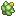 Babiri Berry | lures steel-type Pokémon (+10 weight) |
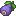 Belue Berry | 100% chance to bias natures toward Defence |
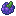 Bluk Berry | 25% chance to bias natures toward Sp. Attack |
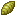 Charti Berry | lures rock-type Pokémon (+10 weight) |
| lures the fairy egg group (+10 weight); lures the grass egg group (+10 weight) | |
| lures the human like egg group (+10 weight); lures the flying egg group (+10 weight) | |
| Chilan Berry | lures normal-type Pokémon (+10 weight) |
| Chople Berry | lures fighting-type Pokémon (+10 weight) |
| Coba Berry | lures flying-type Pokémon (+10 weight) |
| Colbur Berry | lures dark-type Pokémon (+10 weight) |
| 75% chance to bias natures toward Sp. Attack | |
| Custap Berry | 70% chance of None; shortens fishing bite time (0.25) |
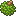 Durin Berry | 100% chance to bias natures toward Sp. Defence |
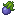 Eggant Berry | |
| shortens fishing bite time (0.1); shifts spawns one rarity bucket up (toward ultra-rare); extra shiny roll ×9 | |
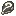 Enigma Berry | 5% chance of a hidden ability |
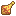 Figy Berry | 50% chance to bias natures toward Attack |
| Ganlon Berry | +5 Defence IVs (100%) |
| Glistering Melon Slice | shifts spawns one rarity bucket up (toward ultra-rare) |
| shortens fishing bite time (0.25) | |
| Golden Apple | shortens fishing bite time (0.25); shifts spawns one rarity bucket up (toward ultra-rare); extra shiny roll ×1 |
| shifts spawns one rarity bucket up (toward ultra-rare) | |
| Grepa Berry | lures Pokémon that yield Sp. Defence EVs |
| Haban Berry | lures dragon-type Pokémon (+10 weight) |
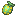 Hondew Berry | lures Pokémon that yield Sp. Attack EVs |
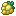 Hopo Berry | raises spawn level by 10 |
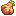 Iapapa Berry | 50% chance to bias natures toward Defence |
| Jaboca Berry | +100 starting friendship |
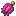 Kasib Berry | lures ghost-type Pokémon (+10 weight) |
| Kebia Berry | lures poison-type Pokémon (+10 weight) |
| Kee Berry | 25% chance of female gender |
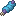 Kelpsy Berry | lures Pokémon that yield Attack EVs |
| Lansat Berry | +5 HP IVs (100%) |
| Leppa Berry | raises spawn level by 5 |
| Liechi Berry | +5 Attack IVs (100%) |
| Lum Berry | lures the dragon egg group (+10 weight); lures the monster egg group (+10 weight) |
| Mago Berry | 50% chance to bias natures toward Speed |
| 75% chance to bias natures toward Speed | |
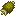 Maranga Berry | 25% chance of male gender |
| Micle Berry | 100% chance of None; shortens fishing bite time (0.25) |
| 25% chance to bias natures toward Speed | |
| 75% chance to bias natures toward Defence | |
| Occa Berry | lures fire-type Pokémon (+10 weight) |
| shortens fishing bite time (0.33) | |
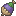 Pamtre Berry | 100% chance to bias natures toward Sp. Attack |
| Passho Berry | lures water-type Pokémon (+10 weight) |
| Payapa Berry | lures psychic-type Pokémon (+10 weight) |
| lures the water 3 egg group (+10 weight); lures the bug egg group (+10 weight) | |
| lures the mineral egg group (+10 weight); lures the amorphous egg group (+10 weight) | |
| Petaya Berry | +5 Sp. Attack IVs (100%) |
| 25% chance to bias natures toward Defence | |
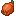 Pomeg Berry | lures Pokémon that yield HP EVs |
| Qualot Berry | lures Pokémon that yield Defence EVs |
| Rabuta Berry | 75% chance to bias natures toward Sp. Defence |
| lures the field egg group (+10 weight) | |
| 25% chance to bias natures toward Attack | |
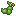 Rindo Berry | lures grass-type Pokémon (+10 weight) |
| Roseli Berry | lures fairy-type Pokémon (+10 weight) |
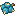 Rowap Berry | rerolls the Pokémon's drops |
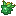 Salac Berry | +5 Speed IVs (100%) |
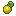 Shuca Berry | lures ground-type Pokémon (+10 weight) |
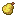 Sitrus Berry | shortens fishing bite time (0.5) |
| 100% chance to bias natures toward Attack | |
| Starf Berry | extra shiny roll ×4 |
| shortens fishing bite time (0.125) | |
| Tamato Berry | lures Pokémon that yield Speed EVs |
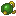 Tanga Berry | lures bug-type Pokémon (+10 weight) |
| 75% chance to bias natures toward Attack | |
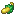 Wacan Berry | lures electric-type Pokémon (+10 weight) |
| Watmel Berry | 100% chance to bias natures toward Speed |
| 25% chance to bias natures toward Sp. Defence | |
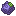 Wiki Berry | 50% chance to bias natures toward Sp. Attack |
| Yache Berry | lures ice-type Pokémon (+10 weight) |
Seasoning food effects
These ingredients grant potion effects when cooked into snacks and eaten (from the pack's seasonings data; ingredients that only change the snack's colour are omitted).
| Ingredient | Effect when eaten |
|---|---|
| Allium | Fire Resistance (3s) |
| Azure Bluet | Blindness (11s) |
| Resistance (5s) | |
| Luck (7s) | |
| Blue Orchid | Saturation (0s) |
| Chorus Flower | Levitation (3s) |
| Cornflower | Jump Boost (5s) |
| Luck (7s) | |
| Dandelion | Saturation (0s) |
| Dead Bush | Bad Omen (3s) |
| Absorption (11s) | |
| Fire Resistance (3s) | |
| Green Mint Leaf | Luck (7s) |
| Poison (0s) | |
| Lilac | Slow Falling (3s) |
| Lily Of The Valley | Poison (11s) |
| Mental Restoration (10s) | |
| Cleanse All (0s) | |
| Invisibility (13s) | |
| Cleanse All (0s) | |
| Orange Tulip | Weakness (7s) |
| Oxeye Daisy | Regeneration (7s) |
| Peony | Slow Falling (3s) |
| Strength (5s) | |
| Luck (7s) | |
| Pink Petals | Regeneration (7s) |
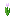 Pink Tulip | Weakness (7s) |
| Pitcher Plant | Hunger (13s) |
| Poisonous Potato | Poison (5s) |
| Poppy | Night Vision (5s) |
| Haste (13s) | |
| Luck (7s) | |
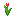 Red Tulip | Weakness (7s) |
| Instant Health (0s) | |
| Rose Bush | Resistance (5s) |
| Hunger (30s) | |
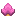 Spore Blossom | Mining Fatigue (7s) |
| Sugar | Speed (13s) |
| Sunflower | Glowing (3s) |
| Torchflower | Night Vision (5s) |
| Cleanse Negative (0s) | |
| Luck (7s) | |
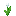 White Tulip | Weakness (7s) |
| Wildflowers | Slowness (7s) |
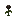 Wither Rose | Wither (7s) |